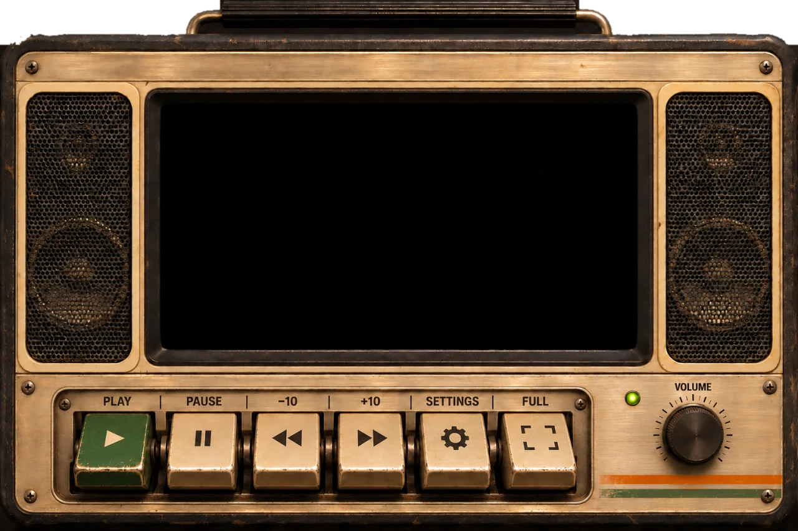
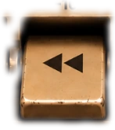
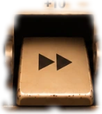
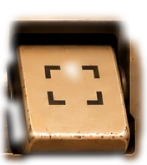

KEYBOARD FIRST
Every control is reachable with Tab and works with Space, Enter and the arrow keys. Esc closes the menu. Focus is always outlined.
CONTRA x VIDEO.JS SKIN CHALLENGE / 2026
A warm tape-deck skin for the Video.js v10 player. Clicky transport keys, a volume knob you can turn, and every control reachable by thumb, mouse or keyboard.




Or use the deck: click a key, drag or scroll the volume knob, tap the screen to play.
01 / ACCESS
Every control is reachable with Tab and works with Space, Enter and the arrow keys. Esc closes the menu. Focus is always outlined.
Times and controls sit on a solid dark bar, so type and icons keep their contrast over bright or dark video.
On a phone the deck gains a row of 48 pixel touch keys and a full-width seek bar. Fullscreen uses the same size.
Key travel, knob easing and screen flicker switch off when reduced motion is turned on.
02 / NOTES
SIDE A started with one question: what if a web player felt like the machine you grew up rewinding? The palette comes from aged brass, olive enamel and green phosphor, with Video.js orange for everything that needs your eye. The controls borrow the logic of transport keys: one job per button, a clear pressed state, labels you can read from across the room.
Under the casing it is a plain Video.js v10 skin built from the standard components. Go fullscreen and the deck steps aside for a slim brass-edged tray.
PRESS START 2P / HEADLINES
VT323 / SCREEN TYPE 0123456789
Space Mono / everything you read